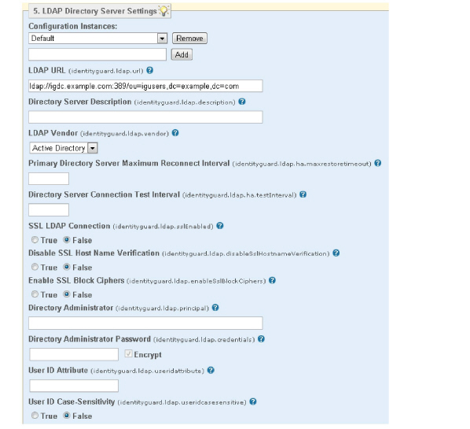

|
IdentityGuard Server 11.0 Administration Guide |
|
IdentityGuard Server 11.0 Administration Guide |
You can add a new LDAP repository at any time, even if you already have database repositories configured.
The first LDAP repository added, whether during Entrust IdentityGuard installation or using this procedure, becomes the Default instance. The properties you set for the Default instance become the defaults for any subsequent LDAP repository you add.
1. If your LDAP directory is not already set up for Entrust IdentityGuard, load the Entrust IdentityGuard directory LDIF files and configure the directory accordingly. For instructions, see the Entrust IdentityGuard Directory Configuration Guide.
Attention: Choose the name for the repository carefully; you cannot change the name after you have assigned it to a group. If you do, the user data in that repository cannot be found. The first directory you define is always called Default.
2. Start the Entrust IdentityGuard Properties Editor. (See Logging in and out of the Properties Editor.)
3. On the Table of Contents, click LDAP Directory Server Settings.
4. From the Configuration Instances drop-down list, do one of the following:
● Select Default to configure LDAP repository settings that will apply to all repositories in your implementation (if you have multiple repositories) or your only LDAP repository.
● Enter a configuration name in the empty field and select Add to configure an LDAP repository that will have settings that are different from the default.
5. For the LDAP URL property, provide the URL to connect to the directory and search base, using the following syntax:
<ldap_server_URL>:<port>/<search_base>
Where:
● <ldap_server_URL> is the URL to your LDAP directory, including the ldap:// or ldaps:// prefix
● <port> is the LDAP port. The port is optional if you are using the default port (389 for LDAP; 636 for LDAPS)
● <search_base> is the search base to connect to
For example,
ldap://ldap.svr.com:389/ou=users,c=ca
(For more details, see Using a search base.)
When specifying the LDAP URL, keep in mind the following guidelines:
● Replace spaces in the URL with %20.
● To specify more than one search base for failover purposes, use the full URL and separate each URL with a space. For example:
ldap://ldap.svr.com:389/ou=users,c=ca ldap://ldap.svr.com:389/ou=admins,c=ca
Note: To specify multiple search bases so you can store users in multiple search bases, create and configure a separate LDAP Configuration Instance for each search base.
● If you are specifying a search base in Active Directory, it is highly recommended that you do not use a top-level container such as dc=mycompany,dc=com. Instead, use one or several lower-level containers such as cn=users,dc=mycompany,dc=com and cn=admins,dc=mycompany,dc=com. If you must use a top-level container, ensure that referrals are disabled in Entrust IdentityGuard or else errors may occur. For more information about referrals, see the property Follow Referrals Returned by the Repository.
6. Provide a unique name in the Directory Server Description field to identify the configuration instance later in the Administration interface.
7. LDAP Directory Vendor From the drop-down list, select the vendor of the LDAP directory you are using as your user repository. The default value is Not specified.
Note: When you select an LDAP vendor, you enable features that let you manage disabled and expired user accounts (if supported by the selected vendor). To explicitly disable the these features, you must set the Repository Data policies to False. For more information, see Repository Data policies.
8. In a high-availability environment, Primary Directory Server Maximum Reconnect Interval specifies the maximum time, in hours, between attempts to connect to the primary directory. The default is 24 hours.
9. In a high-availability environment with pooled connections, Directory Server Connection Test Interval specifies the time, in seconds, between tests to check if the connections are still valid.
If this property is set to 0 (zero), the connection is tested only when Entrust IdentityGuard attempts to connect to the directory. The default value is 0.
10. Set SSL LDAP Connection to True if you are using an SSL connection to the directory. The default value is False.
Before setting this property to True, ensure that the URL in the LDAP URL property specified in Step 5 refers to a secure port (636, for example) and that the directory has a trusted certificate.
Attention: If you do not specify a secure port when this property is set to True, the server may hang indefinitely when it attempts to connect to the directory.
11. Set Disable SSL Host Name Verification to True only for testing or debugging your Entrust IdentityGuard system. The default value is False.
12. Make sure the administrator specified in the Directory Administrator field has permission to add and remove object classes and attributes from all entries in the new repository, for example:
cn=administrator,cn=users,dc=myldapserver,dc=entrust,dc=com
Note: If you are configuring an Active Directory repository, the add/remove permissions are not necessary.
13. Enter a valid password in Directory Administrator Password.
Depending on your directory password policies, this password may expire from time to time and must be updated. See Updating the directory password.
14. Set the User ID Attribute property. Typically this is sAMAccountName for Active Directory, and usually uid or cn for other LDAP repositories. (See the Entrust IdentityGuard Directory Configuration Guide for details about supported directories.)
15. Set User ID Case-Sensitivity to True to make the user ID in the directory case sensitive. The default value is False.

16. Set the Policy Directory Entry property to the DN of the special user created in the directory to hold Entrust IdentityGuard policy. This DN must be specified relative to the base DN entered in the LDAP UTL. For example, if the LDAP URL is
ldap://ldap.host.com/dc=users,dc=mycompany,dc=com
In this example, the full DN of the policy entry is:
uid=IGPolicy,dc=users,dc=mycompany,dc=com
Then set Policy Directory Entry to:
uid=IGPolicy
17. Set User Object Class to your directory object class that allows the addition of the Entrust IdentityGuard attributes. If you do not set it, it defaults to entrustIGUser.
18. To configure an Active Directory repository, set Add User Object Class to False. For any other LDAP directory, set this property to True.
19. Set Policy Object Class to the directory object class to be used to allow policy attributes to be added to an entry. If you do not set it, it defaults to entrustIGPolicy.
20. To configure an Active Directory repository, set Add Policy Object Class to False. For any other LDAP directory, set this property to True.
21. If you want to restrict your Entrust IdentityGuard users to directory entries that already have a particular object class, enter the appropriate object class in Entrust IdentityGuard User Entry Object Class. If you choose to add this property, all Entrust IdentityGuard users must have this object class. If you do not set this property, this search filter is not set.
22. The LDAP optimization filter is used by default to True to optimized LDAP search performance.
If your upgrade path has continued from Entrust IdentityGuard 7.x, and there is still user data that was not used for authentication (and therefore not updated in the Administration interface) while you were running Entrust IdentityGuard 8.1, set Use Optimized Filter to False.
Note: If all of your Entrust IdentityGuard users have the entrustIGGroup attribute set, you can safely set this property to True.
23. The next group of LDAP properties is used when configuring failover. If you are not enabling failover, you can leave all of these properties at their defaults. To enable failover and set these properties appropriately, see Configuring failover and high availability.
24. Include Subseconds with Generalized Time: Set this property to True (default) if your directory requires generalized time attributes that contain subseconds. Set this property to False for Novell eDirectory.
25. If you set Follow Referrals Returned by the Repository to True, Entrust IdentityGuard follows referrals. This may result in connection timeouts if your directory returns referrals that cannot be followed.
26. If you plan to create Entrust IdentityGuard users by enrolling them from this repository, set User Enrollment to True.
27. Optional: If you are using the user enrollment feature (User Enrollment = True), you can add a filter expression in the User Enrollment Search Filter. See To create the filter for finding potential new users in the LDAP repository.
28. If you are configuring an Active Directory repository and you are enabling User Enrollment, set Paging Supported to True.
29. If you are using the user account disabled indicator in the LDAP directory to determine the user account status in Entrust IdentityGuard, use the Disabled Account Attribute to set the directory attribute to interpret as meaning the user account is disabled.
The default value is Vendor Default. When this option is used, Entrust IdentityGuard uses the value that applies to the specific directory being used, as defined in the LDAP Vendor property set in Step 7 above.
In each case, this is the most commonly used attribute to indicate a disabled user in the named directory. For more detailed information, see also Suspending disabled and expired LDAP users.
● Vendor Default
● ibm-pwdAccountLocked (Tivoli)
● loginDisabled (eDirectory)
● msDS-UserAcountDisabled (ADAM/ADLDS)
● nsAccountLock (Sun ONE/Red Hat)
● orcllsEnabled (Oracle)
● userAccountControl (Active Directory)
● Custom
If you are using one of the directories listed, but you are not using the default attribute, select Custom. Selecting Custom reveals another field. Use this field to enter the disabled account attribute for your directory.
Enter the attribute and the value that indicates the user is disabled in the following form:
<attribute_name>;<value_meaning_disabled>
Where:
<attribute_name> is the name of the LDAP directory attribute to check to find out if the user is disabled. The attribute name is not case sensitive.
<value_meaning_disabled> is optional. When used, it contains the value of the attribute that means the user is disabled. When it is not used, the presence of the attribute means that the user is treated as being disabled.
(If you do not include this value, leave off the semi-colon (;), too.)
Some examples:
userIsDisabled
The user is treated as being disabled if they have the attribute userIsDisabled.
userIsDisabled;true
The user is treated as being disabled if they have the attribute userIsDisabled and it is set to the value true.
Note: Only one attribute/value pair is allowed in this field.
Note: To explicitly disable the LDAP disabled user features, you must set the Repository data policies to False. See Repository Data policies.
30. If you are using the user expired indicator in the LDAP directory to determine the user status in Entrust IdentityGuard, use the Expired Account Attribute to set the directory attribute to interpret as meaning the user is expired.
The choices for this property are shown below. The default value is Vendor Default. When this option is used, Entrust IdentityGuard uses the value that applies to the specific directory being used, as defined in the LDAP Vendor property set in Step 7 above.
In each case, this is the most commonly used attribute to indicate a expired user in the named directory. For more information about setting this attribute, see Suspending disabled and expired LDAP users.
● Vendor Default
● accountExpires (AD/ADAM/AD LDS)
● loginExpirationTime (eDirectory)
● orclActiveEndDate (Oracle)
● Custom
If you are using one of the directories listed, but you are not using the default attribute, select Custom. Selecting Custom reveals another field. Use this field to enter the disabled account attribute for your directory.
Enter this property in the form <attribute_name> where <attribute_name> is the name of the LDAP directory attribute to check to find out if the user is expired. The attribute name is not case sensitive.
If <attribute_name> is not recognized as one of the predefined values set for the supported LDAP directories, it is assumed to be an ASN.1 time type.
Note: To explicitly disable the LDAP expired user features, you must set the Repository data policies to False. See Repository Data policies.
31. To map the user’s full name from the directory into Entrust IdentityGuard, enter the attribute your directory uses for the full name in Full Name Attribute. If you leave it blank, no mapping is performed.
32. To map the user’s contact info from the directory into Entrust IdentityGuard, enter the contact information mappings in Apply Contact Info Mappings.
These mappings are case-sensitive and applied in the order listed. If multiple contact information mappings map to the same contact information label, only the first mapping is applied. To define the contact information mappings, see Mapping contact info from an LDAP directory.
33. Change other settings as required. If left blank, they use implied defaults. For an explanation of each property and its default, see LDAP Directory Server Settings.
34. Click Validate & Save.
Attention: If you have only database repositories configured, and you are adding the first LDAP repository, you must set the Card/User Repository Implementation Classes to Database (Default) and Directory Server
35. If you already have JDBC repositories configured, and this is your first LDAP repository:
a. Set Use Optimized Filter property to True.
b. Click Table of Contents.
c. From the Table of Contents, click Repository Settings.
d. Set Card/User Repository Implementation Classes to Database (Default) and Directory Server.
36. Click Validate & Save.
To modify a directory repository
Attention: Do not rename a repository after you assign it to a group. If you do, the user data in that repository cannot be found.
1. Start the Entrust IdentityGuard Properties Editor. (See Logging in and out of the Properties Editor.)
2. In the Table of Contents, click LDAP Directory Server Settings.
3. Select the directory you want to modify from the Configuration Instances drop-down list.
All the settings appear. The blank fields have implied defaults.
4. Modify the settings as required. For a description of each property and its defaults, see LDAP Directory Server Settings.
5. Click Validate & Save.
6. Log out of the Properties Editor and restart the Entrust IdentityGuard server service after you make all property changes.
For an example of how to change from a non-SSL LDAP connection to one using SSL, see Securing the LDAP connection with SSL .